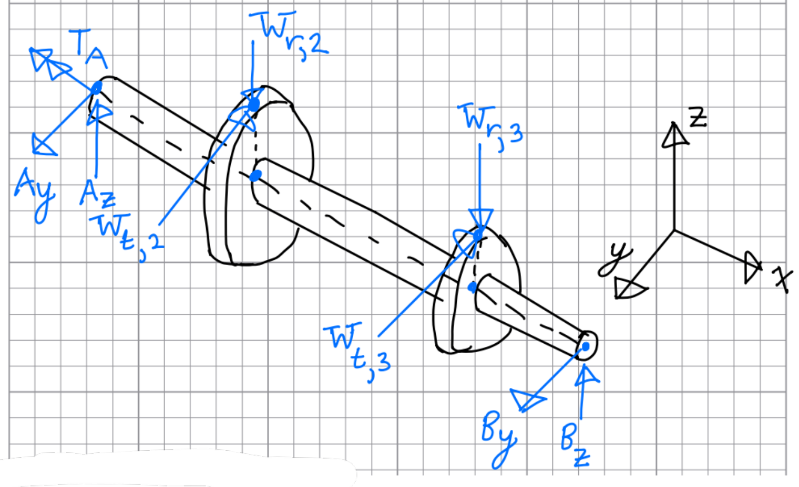
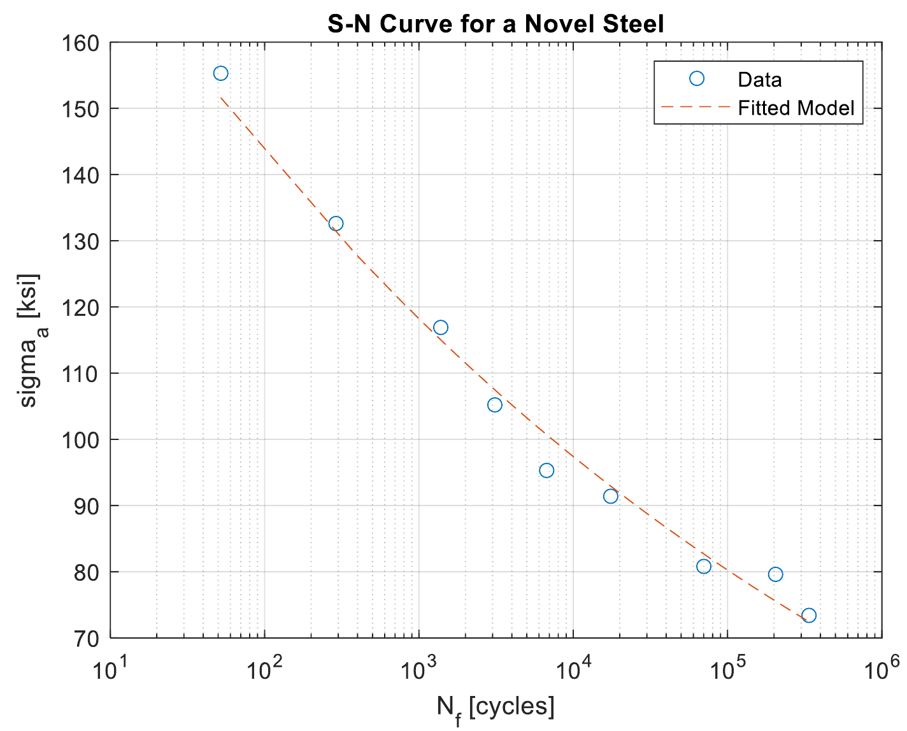
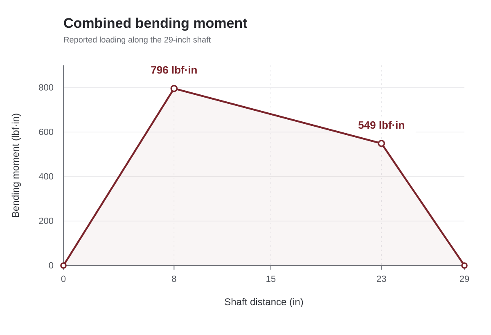

Mechanical design
Driveshaft fatigue & optimization
Linking shaft geometry, fatigue life, and material selection.
- Timeline
- Sep — Oct 2025
- Context
- Analysis & optimization
- Tools & methods
Team: Jacob Cockerill, Eric Billips

Overview
We analyzed a gear-driven shaft under combined bending and torsion. We first sized a constant-diameter steel shaft using supplied fatigue data, then explored a lighter stepped design by comparing materials and section diameters while accounting for shoulder stress concentrations and gear-fit requirements.
Starting with fatigue data
The first study specified a 1.2 hp drive at 300 rpm and an 800-hour service-life target, equivalent to 14.4 million revolutions. The loading included factors of 1.5 on motor torque and 1.2 on radial gear forces to account for uncertainty. We fitted a power-law stress–life relationship to supplied fully reversed fatigue data, then used it to size the constant-diameter shaft. The service life was a design target, not a measured test result.
From gear loads to local stress
For the stepped-shaft study, we resolved bearing reactions from radial and tangential gear forces, then constructed torque and combined bending-moment diagrams. Rotating bending supplies the alternating stress component, while steady torque supplies the mean component. The shoulder transitions require local stress-concentration checks in addition to the nominal shaft stresses.
Accounting for fatigue at the shoulders
The stepped design had a separate 500-hour life target, with at least a 0.0625 in diameter change at each gear and fillet radii between 0.005 and 0.1 in. We evaluated local fatigue using notch sensitivity, size and machined-surface corrections, and Morrow and Smith–Watson–Topper mean-stress models. We fixed both fillet radii at 0.1 in to simplify the diameter search. That was a modeling choice within the allowed range, not a requirement; the brief also favored smaller fillets for gear fit.
A constrained diameter search
We used MATLAB’s fmincon to minimize fatigue-equation residuals while constraining the shoulder diameter ratios and step geometry. Candidate dimensions were used to calculate shaft volume and mass for five steels, aluminum, and titanium. This was a numerical sizing and material-comparison study, not a direct proof of minimum mass or a manufactured, fatigue-tested shaft.
Project details

Open full-size figure

Open full-size figure